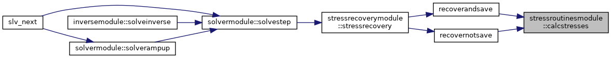

Module with subroutine for superelement stress calculation/storage. More...
Functions/Subroutines | |
| subroutine | calcstresses (addStress0, rdb, sam, vtf, vtfId, isup, sv, sf, vms, irec, isav, iprint, lpu, ierr) |
| Calculates element stresses and stores on results database file. More... | |
Detailed Description
Module with subroutine for superelement stress calculation/storage.
Function/Subroutine Documentation
◆ calcstresses()
| subroutine stressroutinesmodule::calcstresses | ( | logical, intent(in) | addStress0, |
| type(rdbtype), intent(inout) | rdb, | ||
| type(samtype), intent(in) | sam, | ||
| integer, intent(in), optional | vtf, | ||
| integer, intent(in), optional | vtfId, | ||
| integer, intent(in), optional | isup, | ||
| real(rk), dimension(:), intent(in), optional | sv, | ||
| real(dp), dimension(:), intent(out), optional | sf, | ||
| real(dp), dimension(:), intent(out), optional | vms, | ||
| integer, intent(in), optional | irec, | ||
| integer, intent(in), optional | isav, | ||
| integer, intent(in) | iprint, | ||
| integer, intent(in) | lpu, | ||
| integer, intent(out) | ierr | ||
| ) |
Calculates element stresses and stores on results database file.
- Parameters
-
[in] addStress0 Include residual stresses from external source rdb The results database file to write stress results to [in] sam Assembly management data for the superelement [in] vtf VTF file handle [in] vtfId VTF result block ID [in] isup Based ID of the superelement [in] sv Superelement displacement vector [out] sf Superelement nodal forces [out] vms von Mises stress state array [in] irec Recovery timer handle [in] isav Saving timer handle [in] iprint Print switch [in] lpu File unit number for res-file output [out] ierr Error flag
The von Mises stress is also written to the VTF-file, if such output is specified. The von Mises stress can also be returned in the state array vms, for use by external visualization tools.
- Date
- 11 Oct 2000
Here is the call graph for this function:

Here is the caller graph for this function:
